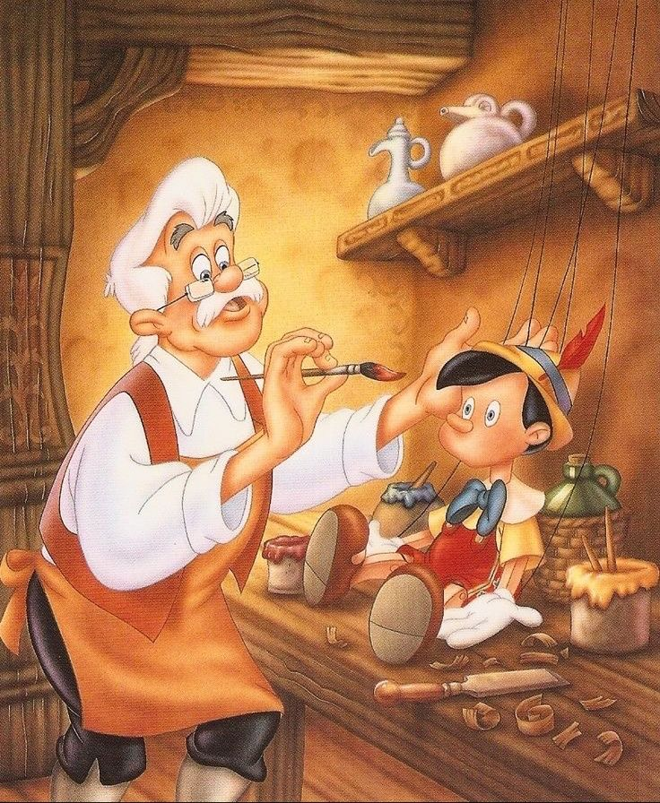

Pinóquio
Era uma vez um homem chamado Gepeto, um talentoso carpinteiro que vivia sozinho. O seu sonho era ter um filho a quem pudesse oferecer todo o seu amor e carinho.
Um dia, Gepeto construiu um lindo boneco de madeira. Quando terminou a
sua bela construção, suspirou:
-Quem me dera que este rapazinho de madeira fosse real e vivesse aqui
comigo como meu filho!..
Após dizer estas palavras, aconteceu algo muito estranho. O pequeno
rapaz de madeira ganhou vida! As palavras de Gepeto pareciam ter sido
ouvidas! O carpinteiro gritou de alegria e, entre gargalhadas de
felicidade, disse:
-Seja bem-vindo pequeno rapaz! Vou chamar-te Pinóquio. Gepeto tornou-se
assim um pai para o rapaz.
Logo na manhã seguinte ajudou-o a vestir-se, deu-lhe livros, um beijo na
face e mandou-o para a escola. Sendo agora um menino como outros, era
necessário aprender a ler, escrever e aprender os números. Contudo,
antes de o o menino sair para a escola, avisou-o:
-Assim que a escola terminar, vem imediatamente para casa. Não te
esqueças!
Pinóquio respondeu que sim e, alegremente, saiu a saltitar e foi a
caminhar em direção à escola.
Pelo caminho, Pinóquio reparou que na praça havia um espetáculo de
marionetas. Juntou-se a elas e, dançou tão bem, que o dono das
marionetas lhe ofereceu cinco moedas de ouro. Ficou maravilhado e só
pensava como Gepeto iria ficar feliz quando lhe entregasse as moedas.
Já perto da escola, Pinóquio encontrou dois homens maus. Como era muito
ingénuo, os dois homens convenceram-no a ir com eles até uma hospedaria
para comerem e depois dormirem. Depois de comer, Pinóquio ficou
sonolento e adormeceu facilmente. Sonhou que era rico e que ele e seu
pai Gepeto viviam agora sem dificuldades e eram muito felizes. Quando
acordou, esses homens convenceram Pinóquio a enterrar as suas moedas de
ouro num sítio que eles conheciam, dizendo:
-As moedas aqui enterradas transformar-se-ão numa árvore de dinheiro e
nunca mais o teu pai, que já está velho e cansado, precisará de
trabalhar!
Pinóquio assim fez e ficou à espera que as moedas de ouro se
transformassem numa árvore de dinheiro. Esperou muito tempo até que,
cansado, adormeceu.
Os homens maus apareceram e levaram as moedas de ouro, enquanto o rapaz
dormia. Quando acordou, Pinóquio reparou que lhe tinham levado as moedas
e chorou. Não queria voltar para casa com medo de que Gepeto ficasse
zangado e triste com ele… A fada azul Sem saber o que fazer, Pinóquio
começou a caminhar, até que encontrou uma senhora vestida de azul, a
quem pediu ajuda. O que ele não sabia era que a senhora era uma fada. A
fada azul disse que o ajudaria e perguntou-lhe quem eram os seus pais e
onde vivia. Pinóquio respondeu:
-Não tenho casa nem ninguém com quem morar.
A fada azul apercebeu-se que Pinóquio mentia. O nariz do rapaz tinha
começado a crescer! A fada azul então indicou-lhe:
-Volta para casa, para junto do teu pai. Sê um menino bem-comportado e
não mintas mais.
Pinóquio prometeu que assim faria e o seu nariz voltou ao tamanho
normal.
De volta a casa, Pinóquio passou por um parque de diversões e não
resistiu e entrou. O seu nariz começou a crescer outra vez. No parque,
disseram-lhe que poderia comer todos os gelados que ele quisesse, o que
não lhe disseram é que os gelados o iriam transformar num burro!
Pinóquio comeu até não poder mais e, assim que se transformou num burro,
foi vendido a um circo.
No circo foi obrigado a trabalhar duramente. Além disso, foi tão
maltratado que, pouco tempo depois, nem conseguia andar. Como já não
servia para trabalhar no circo, o dono mandou que o atirassem ao mar.
Assim que caiu no mar, Pinóquio transformou-se novamente num rapaz de
madeira. Uma baleia que por ali passava viu-o e engoliu-o, pensando que
era comida.
Dentro da baleia, qual não foi a surpresa de Pinóquio ao encontrar
Gepeto! Este, vendo que Pinóquio não chegava da escola, tinha-o ir
procurar. Caiu ao mar e acabou por ir parar à barriga da baleia. Estava
muito fraco e doente. Um peixe que também lá se encontrava disse:
-Subam os dois para as minhas costas que eu levo-os para casa!
E assim fizeram. Quando chegaram a casa, Pinóquio tomou muito bem conta
de Gepeto até ele ficar bom. A fada azul apareceu outra vez e, ao ver
que o rapaz tinha sido tão bom com Gepeto, disse:
-Como agora és um bom menino vou-te transformar num rapaz de
verdade”.
E assim foi. Gepeto tinha finalmente o filho que tanto desejava e os
dois foram felizes para sempre!